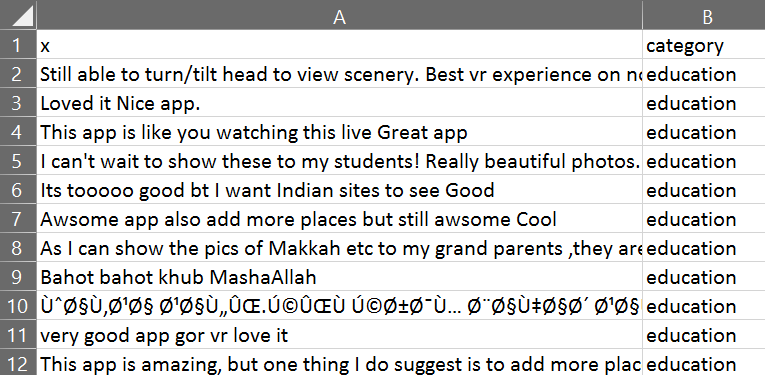
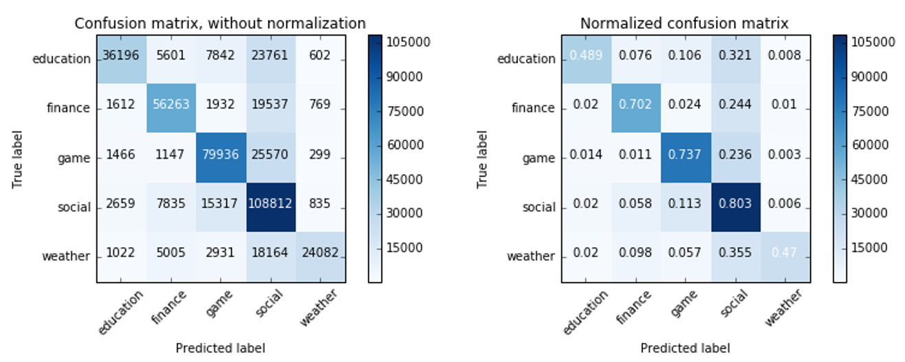
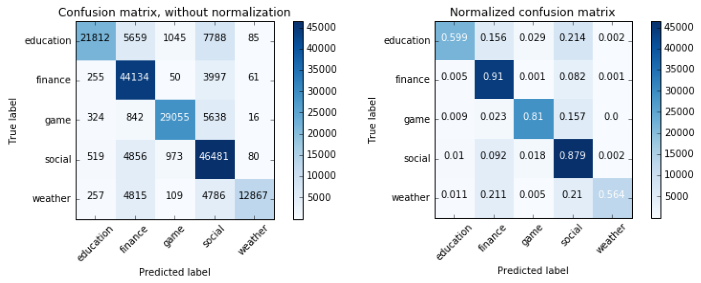
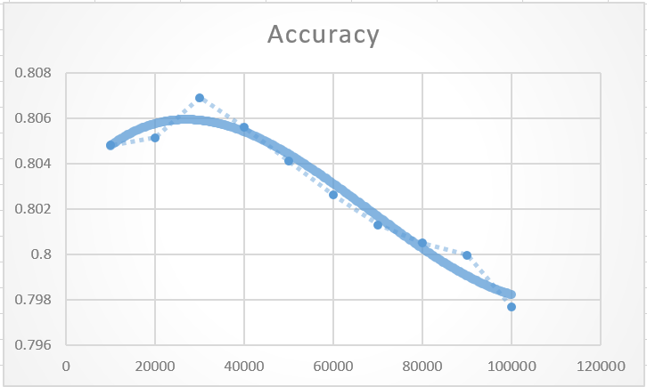
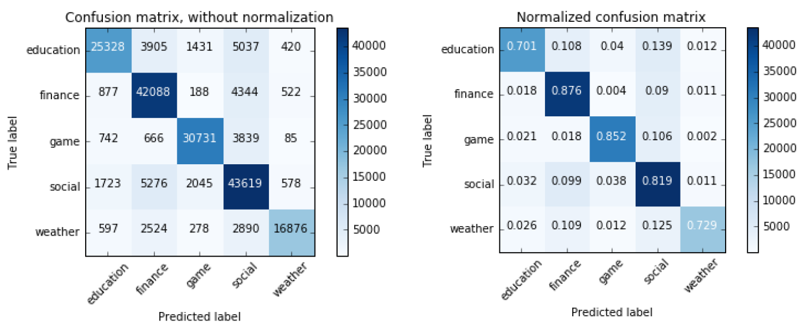
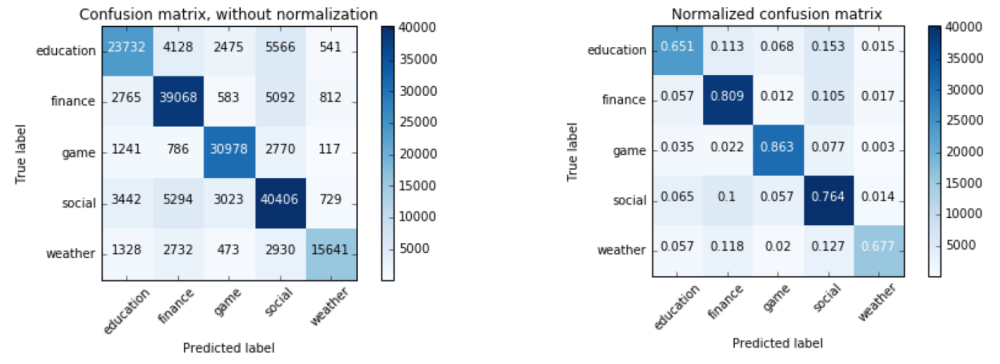
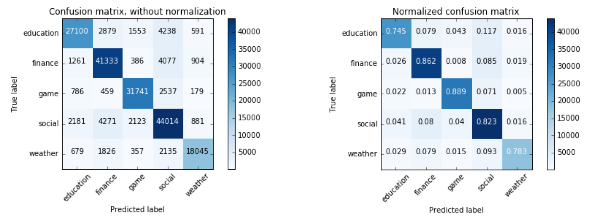

Can text analytics help us categorise reviews?
Text mining is sort of a more specialised area in analytics, so here is the writeup of an assignment I did in Python that I think is a good brief introduction to it. For this assignment, we are trying to figure out if the content of a review in the Google Play Store can help us discern what category of app the review is for.
The data
The dataset I used is unavailable online, but it contains reviews from 500 apps, 100 from each of the following categories: social, education, finance, game, and weather. After some wrangling of the CSV files, I managed to combine them all in one large CSV with just 2 columns.

We’ll refer to the left column as just the ‘review’ column. Each review is represented there as a string that combines both the title of the review and its actual content. On the right is the category of the app this review was for.
Basic steps
- Import all the libraries/functions needed.
from sklearn.feature_extraction.text import TfidfVectorizer import pandas as pd import numpy as np import matplotlib.pyplot as plt import itertools from sklearn.metrics import confusion_matrix from sklearn.naive_bayes import MultinomialNB - Read in the data as a pandas dataframe.
data = pd.read_csv('allReviews.csv') data.columns = ['reviews', 'category'] - Split the data into training and testing sets. I used a 70%-30% split.
rd = np.random.rand(len(data)) < 0.7 train = data[rd] test = data[-rd] y_train = train['category'] y_test = test['category'] x_train = train['reviews'] x_test = test['reviews'] -
Preprocess the textual data and create a sparse feature matrix from it using scikit-learn’s TfidfVectorizer.
TfidfVectorizer does most of the basic text preprocessing steps for us e.g. conversion to lowercase and filtering stop words, as well as turning it into the sparse feature matrix of tokens we will use as input. However, it is not easy to introduce stemming into the process (at least at the time of writing).
vectorizer = TfidfVectorizer(strip_accents = 'ascii', decode_error = 'ignore', stop_words = 'english') X = vectorizer.fit_transform(x_train) - Train a classifier using our training data. I chose to use naive Bayes because of its speed.
model = MultinomialNB().fit(X, y_train) - Transform the testing data into a feature matrix and use our previously trained classifier to predict their category.
predictTfidf = vectorizer.transform(x_test) predicted = model.predict(predictTfidf) - Output the results.
cnf_matrix = confusion_matrix(y_test, predicted) print("Accuracy: " + str((cnf_matrix[0][0] + cnf_matrix[1][1] + cnf_matrix[2][2] + cnf_matrix[3][3] + cnf_matrix[4][4])/x_test.shape[0]))
I also adapted some code from here to print out a nice confusion matrix.

The accuracy here is about 68%. Much better than the expected 20% accuracy for random guessing, but we can do better.
Refining the model
Removing non-English characters/less significant data points
The vast majority of reviews appear to be in English, so it would simplify things without losing too much information if we filtered out all non-alphanumeric characters (including emojis).
In addition, we should filter out reviews which are too short because for the most part, these reviews do not have enough information to be classified. As an example, consider a review which simply says ‘Great app.’ It is equally applicable to any of the categories and as such not particularly useful in training or testing our classifier.
We can consider review length in 2 ways: by its word count or by its character count. Counting the number of words is theoretically possible by using the nltk package’s word_tokenize function, but it slows down the processing a lot. Using a character count is much faster, with basically the same benefit, so that’s what I used. I ran the code 3 times, filtering reviews with less than 10 characters, 50 characters, and 100 characters respectively.
| Cut-off point chosen | 10 characters | 50 characters | 100 characters | |||
|---|---|---|---|---|---|---|
| Number of reviews remaining | 1 326 290 | 655 355 | 339 078 | |||
| Accuracy | 71% | 79.6% | 82% |
Note: Even with the exact dataset I used, the numbers above will vary every time because I redo the random splitting of dataset. But with a dataset this size, the approximate value is always about the same.
As seen from the table above, the accuracy of the model generally increases when we take longer reviews, which is the expected result. Finance is the category that is best predicted, followed by social, game, then weather and education.
There is a large jump in accuracy between taking reviews that have at least 10 characters and those that have at least 50, but a much smaller one between taking reviews that have at least 50 characters and reviews that have at least 100. Given that it is more useful for a classifier to be able to classify a wider range of reviews, it is reasonable to trade off some accuracy for the ability to classify more reviews. From this point on, we will use only reviews with at least 50 characters.
N-grams
We can use the ngram_range parameter of TfidfVectorizer to take into account n-grams. Previously, each feature was a single word with 2 or more alphanumeric characters. In this case, I chose to try adding the parameter ngram_range = (1,2) to consider both single words and pairs of words.

The above are the confusion matrices generated whien I ran the code once, using only reviews with more than 50 characters and also taking into account pairs of words. The accuracy was about 78.5%, not much different from when we only considered single words.
More importantly, taking into account pairs of words seems to increase the accuracy of categorising the finance and social app reviews (which have more data points) at the expense of the other 3 categories. Since it appears to slightly overvalue categories with more training data, we’ll drop this from consideration.
Number of features used
Generally, when we create a feature matrix from our training data, we end up with slightly over 100 000 features used in our classifier. We can reduce the number of features that are used in training our classifier to prevent overfitting to our training data. This can be adjusted using the max_features parameter of TfidfVectorizer.
I ran the Python script 10 times, at intervals of 10 000 features, to try and get an idea of how the accuracy changes according to the number of features used.

This is the graph of accuracy against the number of features used to train the classifier, with a best fit curve overlaid over the plot. It peaks at about 30 000 features.

These are the confusion matrices generated, considering only reviews with at least 50 characters and using 30 000 features to train the classifier.
From the graph of accuracy against number of features, the absolute increase in accuracy is small (1% or less). However, the confusion matrices show that taking fewer features appears to make the model more robust by minimising the effects of the differences in amount of training data available for each category. Education, game and weather all have significantly more correct predictions, while finance and social have slightly less. Hence I chose to leave this in the script.
Using different classifiers
Previously, I mentioned that I used naive Bayes as the main classifier because it was relatively fast and still quite accurate, which made it ideal for use while we tested and refined the model. However, other classifiers may do a better job, so I repeated the classification process (reviews >= 50 characters, number of features used = 30 000) with random forest and linear support vector classifiers.

These are the confusion matrices generated for the random forest classifier (sklearn’s RandomForestClassifier). Its accuracy is about 76%.

This was the result of using a linear support vector classifier (sklearn’s LinearSVC). Its the most accurate of the 3, with an accuracy of about 82.5%. Interestingly, both random forest and linear support vector classifiers were much better at determining game reviews, as compared to naive Bayes which tended to have finance as its best predicted category.
Summary
This is the outline of the final series of steps used:
- Import all libraries needed and read in the data as a pandas dataframe.
- Remove all non-alphanumeric characters from the data.
- Remove all rows where the review column is less than 50 characters.
- Split the resulting dataset into training and test sets.
- Use TfidfVectorizer for preprocessing and creation of feature matrix.
- Feed input into a linear support vector classifier.
- Predict output for the testing data and print the results.
The code for this process can be found here.